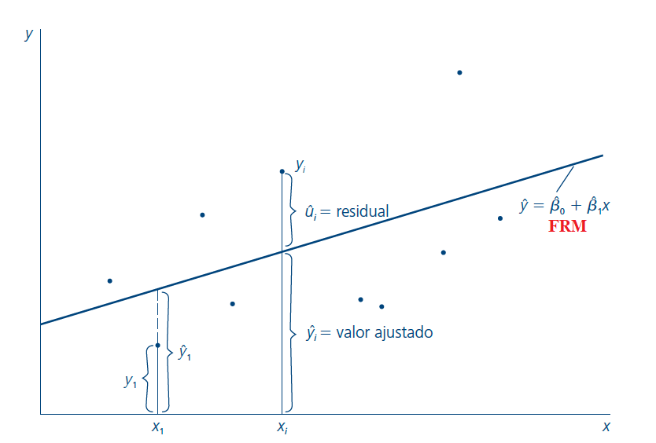
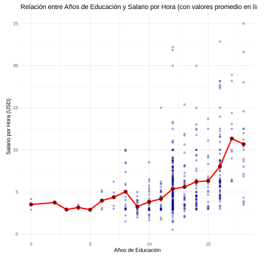
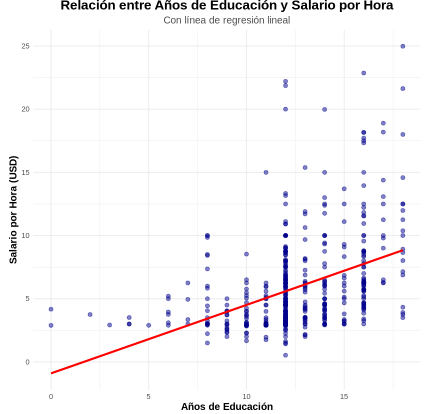

Clase 2 · Regresión lineal simple
Contenido oficial de la semana
Esta página reproduce íntegras y en orden las diapositivas de la semana 2
(sem2/clase2.tex). Los bloques Interactivo, Complemento y las preguntas de
autoevaluación son material adicional para estudiar.
🎯 Objetivos de la sesión
- Plantear el modelo de regresión lineal simple (RLS) e interpretar sus parámetros.
- Entender el supuesto clave \(E[u \mid x] = 0\) y la función de regresión poblacional.
- Derivar e interpretar los estimadores de Mínimos Cuadrados Ordinarios (MCO).
- Descomponer la variabilidad de \(y\) (\(SST = SSE + SSR\)) y medir la bondad de ajuste con el \(R^2\).
- Conocer los supuestos RLS 1–5 y las propiedades de insesgamiento y varianza de MCO.
🗓️ Agenda
| Hora | Bloque |
|---|---|
| 18:40 – 19:15 | Modelo RLS, término de error, supuestos, regresión poblacional y esperanza condicional |
| 19:15 – 19:55 | Estimación por MCO, regresión muestral y ejemplo educación–sueldos |
| 19:55 – 20:05 | Receso |
| 20:05 – 20:30 | Propiedades aritméticas de MCO y método de momentos |
| 20:30 – 20:50 | Descomposición de la varianza, \(R^2\) y cambio de unidades |
| 20:50 – 21:15 | Supuestos RLS, insesgamiento y varianza de los estimadores |
| 21:15 – 21:25 | Autoevaluación, tarea y cierre |
Regresión lineal simple
📄 Diapositivas: sem2/clase2.tex · 34 láminas
Modelo de regresión lineal simple
-
Queremos estudiar la relación entre dos variables x e y en la población.
-
Explicar y en terminos de x o como cambia y cuando cambia x.
-
Modelo de regresión lineal simple (RLS):
\[ y = \beta_0 + \beta_1 x + u \] -
\(\beta_0\), \(\beta_1\) son parámetros poblacionales.
-
u: término de error o perturbación, factores no-observables que afectan a y.
-
El coeficiente \(\beta_0\), permite suponer que E(u) = 0.
-
\(\beta_1\) captura como cambia y cuando cambia x.
Terminología:
-
y: variable dependiente, variable explicada, variable de respuesta, variable predicha o el regresando.
-
x: variable independiente, variable explicativa, variable de control, variable predictora o el regresor.
-
\(\beta_1\): es el parámetro de la pendiente en la relación entre y y x, cuando todos los demás factores en u permanecen constantes, este parámetro es de interés primordial en la economía aplicada.
-
\(\beta_0\): es el parámetro del intercepto, algunas veces llamado término constante.
Termino de error
-
La variable u, llamada término de error, o perturbación en la relación, representa factores distintos a x que afectan a y.
-
Un análisis de regresión simple en realidad trata a todos los factores que afectan a y, y que son distintos a x como factores no observados.
-
Es útil considerar a u como abreviación de "unobserved".
Ejemplo
-
Por ejemplo:
\[ \text{salario} = \beta_0 + \beta_1 \text{educación} + u \] -
Noten que si todos los demás factores son constantes (\(\Delta u = 0\)), entonces:
\[ \Delta \text{salario} = \beta_1 \Delta \text{educación} \] -
\(\beta_1\) es el parámetro de la pendiente en la relación entre \(y\) y \(x\), cuando los factores no observables son constantes. PERO, en general, ¿son constantes?
Modelo de regresión lineal simple
-
Modelo de regresión lineal simple:
\[ y = \beta_0 + \beta_1 x + u \tag{2} \] -
PERO, en general, ¿son constantes?
-
Difícil decir que \(u\) es constante cuando no lo observamos.
-
El supuesto clave para estimar \(\beta_1\) (cómo \(x\) afecta a \(y\)) es que:
\[ E[u|x] = 0 \]\(\rightarrow\) el valor promedio de \(u\) es igual para cualquier valor de \(x\). Además, es igual a cero, implicando que \(x\) no está correlacionada con los factores no observables.
-
Sin esa restricción, no es posible estimar el efecto ceteris paribus \(\beta_1\).
Supuestos
-
Linealidad en los parámetros: la función que relaciona \(y\) con \(x\) es lineal.
-
Media condicional cero:
\[ E[u|x] = E[u] = 0 \]\(\rightarrow\) El valor esperado de los factores inobservables no depende de los valores de \(x\), y dicho promedio es igual a 0, u es media independiente de x.
Ejemplo
¿Qué hay en u? ¿Como se relaciona con x?
Regresión Poblacional
-
Si se cumplen los supuestos anteriores (linealidad y \(E[u|x] = 0\)):
-
Entonces:
\[ y = \beta_0 + \beta_1x + u \]\[ E[y|x] = \beta_0 + \beta_1E[x|x] + E[u|x] \]\[ E[y|x] = \beta_0 + \beta_1x \] -
Por lo tanto, el MRS aproxima la esperanza condicional de y.
-
A la línea \(E[y|x]\) se le llama Función de Regresión Poblacional (FRP).
Esperanza condicional
La función de esperanza condicional es la esperanza de una variable \(Y_i\) (o su media poblacional) cuando \(X_i\) está fijo.
| Individuo | Años educ. | Ingreso |
|---|---|---|
| María | 5 | 120 |
| Juan | 5 | 100 |
| Pedro | 4 | 80 |
| Catalina | 2 | 50 |
FEC para cada nivel de educación:
\(E[Y_i|X_i = 5] = 110\)
\(E[Y_i|X_i = 4] = 80\)
\(E[Y_i|X_i = 2] = 50\)
\(E[Y_i] = 87.5\)
Regresión Poblacional: FRP

Interpretación
Noten que:
\(\rightarrow\) es la pendiente de la Función de la FRP, cuando \(x\) aumenta en una unidad, el valor esperado de \(y\) cambia en \(\beta_1\) unidades.
\(\rightarrow\) es el intercepto de la FRP, el valor medio de \(y\) cuando \(x\) es igual a cero.
Estimación
-
Objetivo: estimar los parámetros poblacionales a partir de una muestra.
-
Sea el modelo poblacional: \(y = \beta_0 + \beta_1x + u\)
-
Entonces, para cada \(i = 1, \ldots, n\) de una muestra podemos escribir:
\[ y_i = \beta_0 + \beta_1x_i + u_i \]donde \(u_i\) es el término de error para la observación \(i\).
Mínimos Cuadrados Ordinarios
Definiciones:
-
\(\hat{\beta}_0\): estimador de \(\beta_0\)
-
\(\hat{\beta}_1\): estimador de \(\beta_1\)
-
\(\hat{y}_i = \hat{\beta}_0 + \hat{\beta}_1 x_i\): valor predicho/estimado de \(y_i\)
-
\(\hat{u}_i = y_i - \hat{y}_i\) residuo. El residuo es el análogo muestral del error.
-
Objetivo: encontrar los estimadores \(\hat{\beta}\) más parecidos a los parámetros \(\beta\), los \(\hat{y}_i\) más parecidos a \(y_i\), los \(\hat{u}_i\) más cercanos a 0.
-
MCO (Mínimos Cuadrados Ordinarios): encuentra los \(\beta\)'s que minimizan la suma de los residuos al cuadrado:
\[ \min_{\hat{\beta}_0, \hat{\beta}_1} \sum_{i=1}^{n} \hat{u}_i^2 = \min_{\hat{\beta}_0, \hat{\beta}_1} \sum_{i=1}^{n} (y_i - \hat{\beta}_0 - \hat{\beta}_1 x_i)^2 \]
Estimación de \(\beta\) MCO
Condiciones de primer orden:
Noten que todas estas variables están en la data. Entonces podemos obtener estos estimadores.
Tarea
-
Muestre que:
\(\sum_{i}^n(x_i - \bar{x})(y_i - \bar{y}) = \sum_{i}^n(x_i - \bar{x})y_i= \sum_{i}^n(y_i - \bar{y})x_i\).
Complemento · Pista para la tarea
Desarrolla el producto y usa que \(\sum_{i=1}^n (x_i - \bar{x}) = 0\) y \(\sum_{i=1}^n (y_i - \bar{y}) = 0\).
Regresión Muestral (FRM)
-
Una vez que estimamos \(\hat{\beta}_0\) y \(\hat{\beta}_1\), obtenemos la función de regresión muestral (FRM):
\[ \hat{y} = \hat{\beta}_0 + \hat{\beta}_1 x \] -
La FRM que se obtiene de una muestra es la versión estimada de la función de regresión poblacional (FRP).
-
En general, la FRP es desconocida y uno se basa en una muestra para estimarla.
-
Valor ajustado o predicho: \(\hat{y}\).
Mínimos Cuadrados Ordinarios

Un ejemplo: relación entre educación y sueldos
-
Tomamos la relación entre años de educación y sueldos por hora en EE. UU.
\[ salario_i = \beta_0 + \beta_1 \text{educación}_i + \epsilon_i \]

Un ejemplo
-
Años de educación y salarios por hora en Estados Unidos.
\[ \text {MCO: } \hat{\text{salario}} = 0.095 + 0.54 \text{educación} \] -
La línea de regresión minimiza los residuos al cuadrado.

Propiedades aritméticas de MCO
-
Los residuales suman cero:
\[ \sum_{i} \hat{u}_i = 0 \quad \Rightarrow \quad \bar{\hat{u}} = 0 \] -
\(x\) es ortogonal a los residuos:
\[ \sum_{i} x_{i} \hat{u}_i = 0 \] -
El promedio muestral de la variable dependiente \(y_i\) es igual al promedio muestral de la estimación \(\hat{y}_i: \bar{y} = \bar{\hat{y}}\)
-
La línea de regresión pasa por el promedio de los datos:
\[ \bar{y} = \hat{\beta}_0 + \hat{\beta}_1 \bar{x} \]
Complemento · Compruébalo
En el simulador encuentra la recta de mínimos cuadrados activa Mostrar recta MCO: verás que \(\sum_i \hat{u}_i = 0\), \(\sum_i x_i\hat{u}_i = 0\) y que la recta pasa por \((\bar{x}, \bar{y})\), incluso si arrastras los puntos.
Método de momentos
Se eligen estimaciones de los parámetros \(\beta_0\) y \(\beta_1\) que resuelvan las contrapartes muestrales.
Estimación de \(\beta\) MCO
Condiciones de primer orden:
Descomposición de la varianza muestral
-
Sea SST la suma de cuadrados totales (total sum of squares):
\[ SST = \sum_{i=1}^{n} (y_i - \bar{y})^2 \] -
Sea SSE la suma de cuadrados explicados (explained sum of squares):
\[ SSE = \sum_{i=1}^{n} (\hat{y}_i - \bar{y})^2 \] -
Sea SSR la suma de cuadrados no explicados (residual sum of squares):
\[ SSR = \sum_{i=1}^{n} \hat{u}_i^2 \]
Se puede demostrar que:
Bondad de Ajuste: \(R^2\)
-
A partir de esta relación se define:
\[ R^2 = \frac{SSE}{SST} = 1 - \frac{SSR}{SST} \] -
Bondad de ajuste: la proporción de la varianza muestral de \(y\) que es explicada por \(x\).
-
Como \(0 \leq SSE \leq SST\), entonces \(0 \leq R^2 \leq 1\).
-
Cuanto más cercano a \(1\), más de la variabilidad de \(y\) es explicada por el modelo.
Cambio de unidades de medición
-
Si la variable independiente se divide o se multiplica por una constante distinta de cero, c, entonces el coeficiente de la pendiente de MCO se multiplica por c o se divide entre c, respectivamente.
-
Cambiar sólo las unidades de medición de la variable independiente no afecta el intercepto.
-
La bondad de ajuste del modelo no depende de las unidades de medición de las variables.
Supuesto 1 RLS
En el modelo poblacional, la variable dependiente, y, está relacionada con la variable independiente, x, y con el error (o perturbación), u, de la manera siguiente:
donde \(\beta_0\) y \(\beta_1\) representan los parámetros poblacionales, del intercepto y pendiente, respectivamente. \(u\) contiene los efectos no observables que afectan a \(y\), \(u\) no debe confundirse con los residuales.
Supuesto 2 RLS
Se cuenta con una muestra aleatoria de tamaño n, \(\lbrace(x_i,y_i): i = 1, 2, ..., n\rbrace\).
Supuesto 3 RLS
No todos los valores muestrales de x, a saber \(\lbrace x_i, i = 1,.., n\rbrace\), son iguales, es decir, no todos tienen el mismo valor.
Supuesto 4 RLS
Para todo valor de la variable explicativa, el valor esperado del error u es cero.
\(E(u|x) = 0\).
Insesgamiento de los estimadores de MCO
Si se cumplen los supuestos 1-4 RLS, los estimadores \(\hat{\beta_0}\) y \(\hat{\beta_1}\) son insesgados:
El insesgamiento es una propiedad de las distribuciones muestrales de \(\hat{\beta_0}\) y \(\hat{\beta_1}\). No dice nada acerca de las estimaciones que se obtienen a partir de una determinada muestra. Se espera que, si la muestra es de alguna manera "representativa", la estimación estará "cerca" del valor poblacional.
-
Si u contiene factores que afectan a y que están correlacionados con x, puede obtenerse una correlación espuria.
-
Es decir, se encuentra una relación entre x e y que en realidad se debe a factores no observados que afectan a y que resultan estar correlacionados con x.
Supuesto 5 RLS
El error u tiene la misma varianza para cualquier valor de la variable explicativa.
La varianza de los factores inobservables, u, condicionales en x, es constante. Esto se conoce como el supuesto de homocedasticidad o de varianza constante.
Varianza de los estimadores de mínimos cuadrados ordinarios
Considerando el supuesto 5 RLS, tenemos:
✅ Autoevaluación
Con los datos de EE. UU. se estimó salario = 0.095 + 0.54·educación. ¿Cuál es la interpretación correcta de 0.54?
✅ β̂₁ describe cómo cambia el salario esperado. Solo es causal si E[u|x] = 0 (supuesto 4), lo que es dudoso: ¿qué hay en u? La tercera opción describe un R², no una pendiente.
En una regresión, SST = 400 y SSR = 300. ¿Cuánto vale el R²?
✅ R² = 1 − SSR/SST = 1 − 300/400 = 0.25 (y SSE = SST − SSR = 100).
Según Var(β̂₁|x) = σ² / Σ(xᵢ − x̄)², ¿cuál de estos cambios no reduce la varianza de β̂₁?
✅ Un σ² mayor aumenta la varianza. Más observaciones y más dispersión en x aumentan Σ(xᵢ − x̄)² y la reducen (pruébalo en el simulador de insesgamiento).
📚 Para la próxima clase
- Wooldridge, capítulo 2 (El modelo de regresión simple).
- Próxima clase: Causalidad y variable omitida — ¿cuándo podemos interpretar \(\hat{\beta}_1\) como un efecto causal?